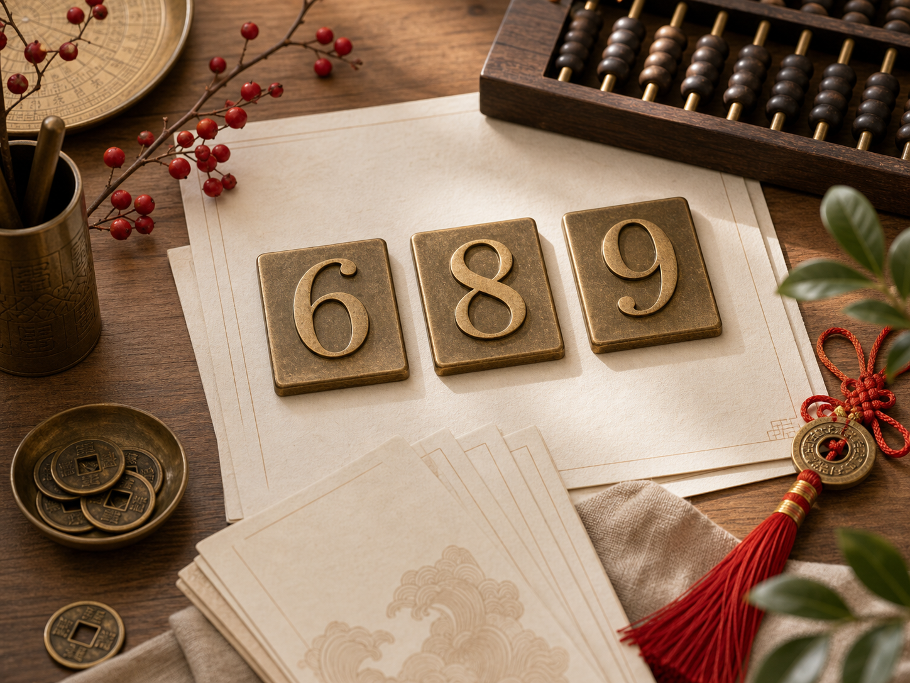

6
Smooth progress
Often read as ease, flow, and things going smoothly.
Often read as ease, flow, and things going smoothly.

Popular because of sound associations with wealth and success.

Often connected with endurance, continuity, and lasting value.
Chinese number meanings often come from pronunciation, visual shape, repeated patterns, and social habit. The number 8 is widely associated with prosperity because it can sound close to words connected with wealth or development. The number 6 can suggest smoothness or flow. The number 9 can suggest longevity or endurance. The number 4 can feel sensitive because it sounds close to death in several Chinese languages.
These associations are real cultural signals, but they are not universal rules. A number may feel lucky in a gift, neutral in a password, awkward in an address, and useful in a brand depending on the audience. Repeated digits such as 88, 888, 66, 99, and combinations such as 168 can feel stronger because they are easy to recognize and remember. At the same time, repeated numbers can look forced if the use case is serious or understated.
Compare a number by asking four questions: what does it sound like, how easy is it to remember, what cultural signal does it carry, and does it fit the actual decision? For a phone number, rhythm and recall may matter more than symbolic perfection. For a gift, the recipient's background matters more than a generic lucky list. For business use, clarity, legality, pricing, and customer trust matter more than a lucky association.
Use the calculator when you want a personal shortlist. Use the guides when you need context for a public choice. Avoid using number meanings as financial, medical, legal, or safety advice.
Often positive in business or gift settings, but still dependent on context, price, and audience.
Useful when the message is flow, progress, or everyday ease rather than dramatic success.
Sensitive in some Chinese-language contexts, but not a universal rule for every person or setting.
A number meaning becomes more useful when it is easy to remember and appropriate for the audience. A number that sounds lucky but is difficult to say may be poor for a phone number. A repeated number that looks strong may be too loud for a quiet brand. A culturally sensitive number may be fine for private use but awkward for a public gift.
When comparing meanings, write a one-sentence reason for each candidate. If the reason is only because the internet says it is lucky, keep researching. A stronger reason connects the number to the use case, such as smooth sound, easy recall, positive gift symbolism, or a personal milestone.